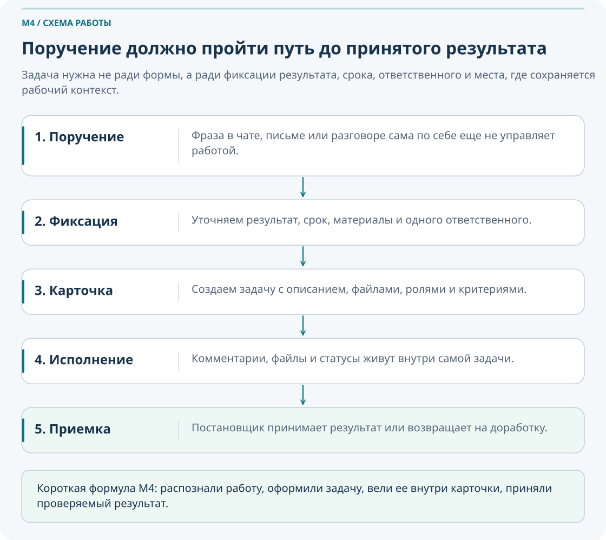
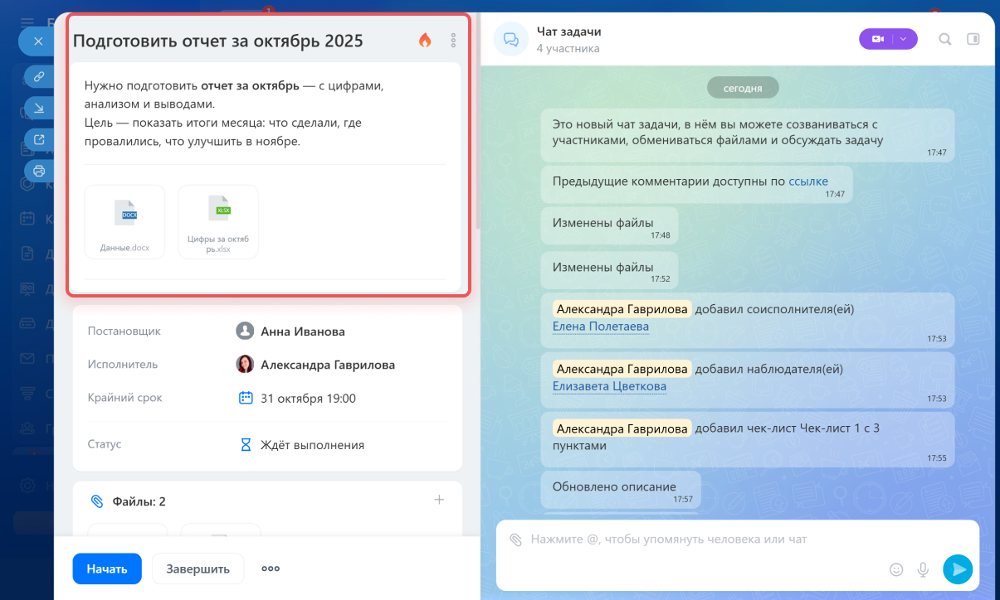
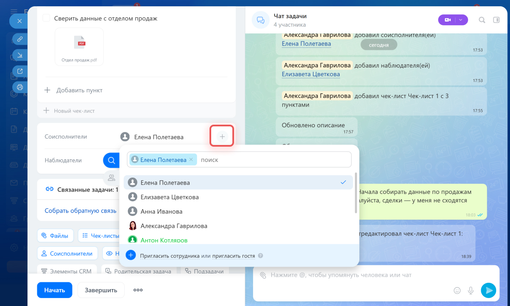
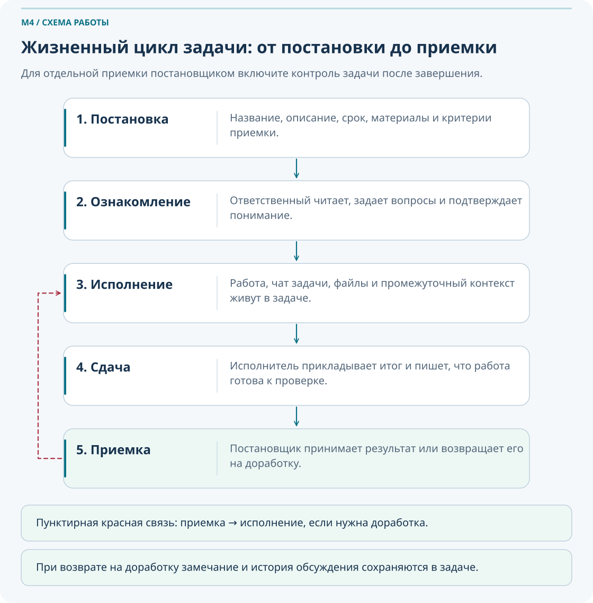
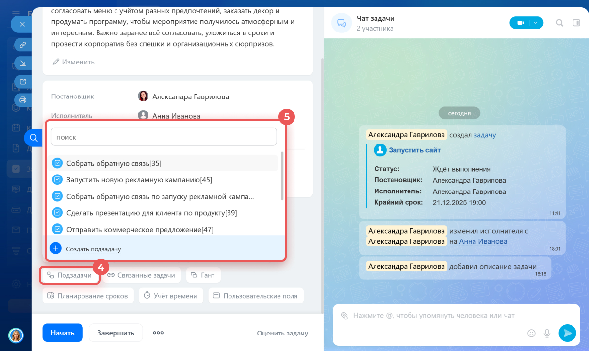
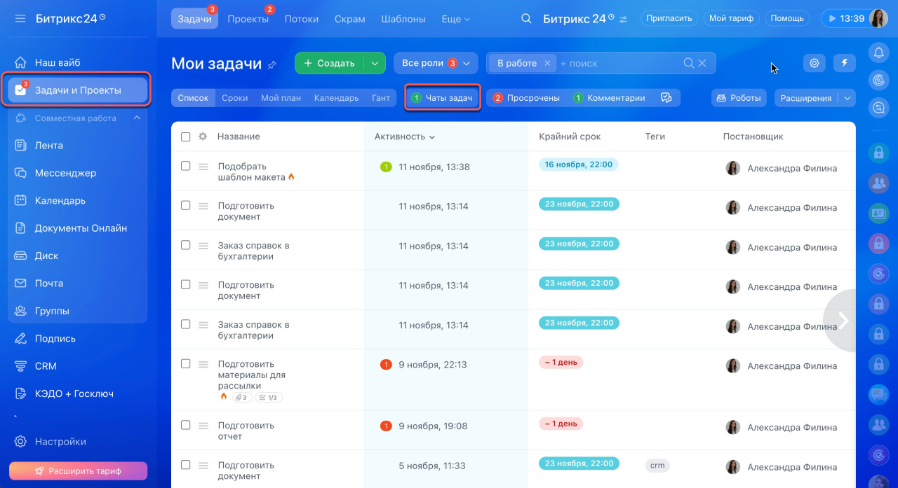
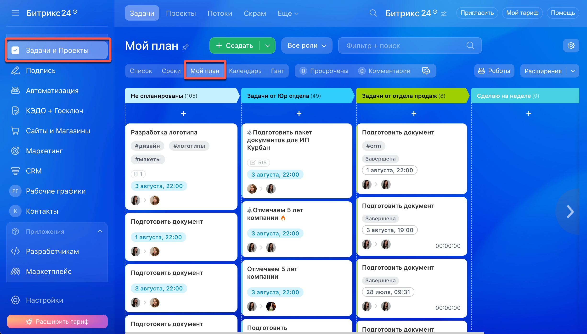
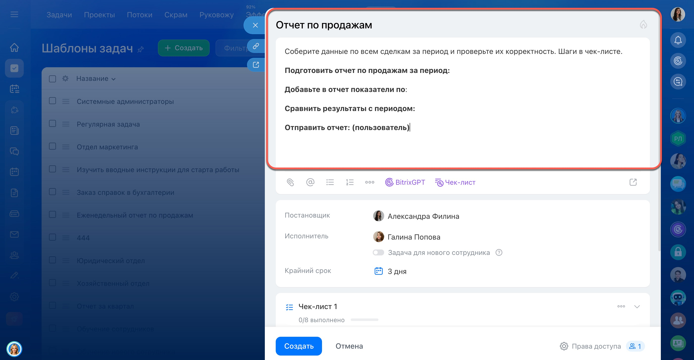

Задачи: от поручения до результата
Этот модуль учит превращать устные и письменные поручения в управляемые задачи: с понятным результатом, одним ответственным, сроком, контролем, комментариями и повторяемой логикой работы.
Что важно понять в M4
В этом модуле важно понять, что не каждое сообщение становится задачей. Но если есть конкретный результат, срок, ответственный, риск забыть договоренность или необходимость проверки, это уже не просто переписка.
Если нужен только быстрый ответ — это чат. Если нужно проинформировать многих — это лента. Если обсуждение связано с уже созданной работой — это комментарий внутри задачи.
Результат прохождения
сотрудник умеет ставить понятные задачи, декомпозировать их и организовывать личную работу
Что стоит запомнить
Если есть ответственный, срок и ожидаемый результат — это задача.
Паспорт модуля
Место в курсе
после M1, M2 и M3
Входной уровень
пользователь ориентируется в портале, коммуникациях и рабочих группах
Целевая аудитория
Сотрудники, руководители и участники рабочих процессов, которым нужно уверенно применять материал модуля в ежедневной работе.
Итоговый результат
сотрудник умеет ставить понятные задачи, декомпозировать их и организовывать личную работу
сотрудник умеет ставить понятные задачи, декомпозировать их и организовывать личную работу
1. Когда поручение нужно переводить в задачу
Задача нужна не потому, что «так принято», а потому что она фиксирует работу. В ней появляются ответственный, срок, ожидаемый результат, файлы, история обсуждения и возможность принять или вернуть результат на доработку.
Задача нужна, если есть хотя бы несколько из этих признаков: конкретный результат, срок, ответственный, риск забыть договоренность, необходимость проверки, потребность в файлах или комментариях, связь с объектом, группой или проектом.

| Ситуация | Что выбрать | Почему |
|---|---|---|
| Нужно быстро уточнить одну деталь | Чат | Нет отдельного результата и контроля |
| Нужно проинформировать группу сотрудников | Лента | Важно донести сообщение многим и сохранить его видимым |
| Нужно выполнить работу к сроку | Задача | Есть ответственный, результат и контроль |
| Нужно обсудить уже идущую работу | Комментарий в задаче | Контекст не должен отрываться от самой задачи |
Плохая фиксация
«Сделай сегодня документы по объекту»
- Неясно, какие документы.
- Нет результата в проверяемой форме.
- Нет ясного места для файлов и комментариев.
Хорошая фиксация
«Подготовить комплект актов по объекту ПС-110, приложить файлы в задачу, срок — сегодня до 17:00, после завершения уведомить руководителя»
- Понятен результат.
- Есть срок.
- Есть место для контроля и проверки.
Вспомните 3 недавних поручения и решите, какие из них должны были стать задачами.
Для каждого поручения отметьте: был ли срок, ответственный, результат, файлы, проверка.
Перепишите одно неудачно данное поручение в формулировку, пригодную для задачи.
2. Карточка задачи: минимальный набор хорошей постановки
Поля задачи и чат расположены рядом. Укажите исполнителя, проверьте крайний срок и добавьте нужные блоки: описание, файлы, чек-лист, результат. В новой версии по умолчанию может подставляться срок в пять рабочих дней: замените его согласованной датой. Поле с датой само по себе не означает, что срок обоснован. Обзор новой карточки.
Карточка задачи должна отвечать на простой вопрос исполнителя: что делать, зачем это нужно, к какому сроку, в каком виде сдавать результат и кого уведомить после завершения.
Понятное название, описание с контекстом, один ответственный, срок, ожидаемый результат, исходные материалы и понятная точка сдачи результата.

Плохое название и описание
Название: «Документы»
Описание: «Сделать как обычно»
- Нет контекста.
- Нет критериев результата.
- Исполнитель вынужден уточнять почти все.
Хорошее название и описание
Название: «Подготовить комплект актов по объекту ПС-110 за май»
Описание: содержит исходные данные, ожидаемый формат, срок, куда приложить результат и кого уведомить после завершения.
- Снижается число уточнений.
- Понятно, как проверять результат.
- Задача готова к исполнению сразу.
Шаблон описания задачи
Чек-лист качества задачи до отправки исполнителю
- Название понятно без дополнительного звонка.
- Один ответственный назначен явно.
- Срок указан в явной форме.
- Результат можно проверить.
- Исходные файлы или ссылки приложены.
- Понятно, где обсуждать детали: в чате задачи, а не в стороннем чате.
Возьмите одну свою задачу и проверьте, что в ней отсутствует из минимального набора.
Перепишите плохое название и описание в рабочий формат по шаблону.
Проверьте, сможет ли другой сотрудник понять задачу без дополнительного звонка постановщику.
3. Роли в задаче: кто за что отвечает
Задача работает только тогда, когда роли не размыты. Главный принцип M4: у задачи должен быть один основной ответственный. Если работа распределяется между несколькими людьми, это решается соисполнителями, подзадачами и чек-листами, а не коллективной безответственностью.
| Роль | Когда использовать | Типичная ошибка |
|---|---|---|
| Постановщик | Формулирует задачу, задает срок, принимает результат | Ставить задачу без критерия приемки |
| Ответственный | Главный владелец исполнения и результата | Назначать несколько «главных» ответственных |
| Соисполнитель | Нужен, если часть работы реально делает другой человек | Добавлять всех подряд вместо нормальной декомпозиции |
| Наблюдатель | Нужен для информирования и контроля без участия в исполнении | Путать наблюдателя с исполнителем |

Если отвечают все, по факту не отвечает никто. Для разделения работы используйте один главный контур ответственности и дополнительные сущности: соисполнителей, подзадачи, чек-листы, комментарии с уточнениями.
Посмотрите на одну свою задачу и определите, действительно ли у нее есть один понятный ответственный.
Проверьте, не используется ли наблюдатель вместо соисполнителя или наоборот.
Если работа у вас реально делится между несколькими людьми, предложите схему подзадач вместо размывания основной ответственности.
4. Жизненный цикл задачи: от постановки до принятого результата
Для отдельной проверки постановщиком откройте настройки рядом с крайним сроком и включите «Проконтролировать задачу после завершения». Без этого параметра завершение не обязательно создает этап приемки. Зафиксируйте итог в блоке результатов или отметьте сообщение в чате как результат. Старые комментарии доступны для чтения, новое обсуждение ведите в чате. Упоминание человека само по себе не добавляет его в участники задачи. Справка о контроле и результатах.
Полезно мыслить задачей как процессом, а не карточкой. У каждой стадии есть действия постановщика и действия ответственного. Именно это делает работу управляемой.
Постановщик формулирует задачу, задает срок, прикладывает материалы и критерии результата.
Ответственный читает описание, задает уточнения и подтверждает понимание работы.
Работа идет в чате и карточке задачи: сообщения, файлы, промежуточные результаты.
Ответственный прикладывает результат и сообщает, что работа готова к проверке.
Постановщик принимает результат или возвращает задачу на доработку с понятным замечанием.

| Этап | Что делает постановщик | Что делает ответственный |
|---|---|---|
| Постановка | Формулирует задачу и критерии приемки | Пока не действует, если задача еще не просмотрена |
| Ознакомление | Отвечает на уточняющие вопросы | Проверяет описание, срок, материалы, задает вопросы |
| Исполнение | Следит за прогрессом без лишнего микроконтроля | Ведет работу и пишет рабочие комментарии в задаче |
| Завершение | Переходит к проверке результата | Прикладывает итог, сообщает о готовности |
| Принятие | Принимает или возвращает с четким замечанием | При необходимости дорабатывает задачу |
Комментарий должен продвигать работу: что уже сделано, что мешает, какой файл приложен, какое решение предлагается, что требуется от постановщика. Фразы вроде «смотрю» или «ок» полезны мало.
5. Декомпозиция: когда подзадача, а когда чек-лист
Крупная работа редко делается одним движением. Но важно не раздувать структуру без необходимости. Подзадачи и чек-листы нужны для разных типов контроля.
| Если нужно… | Что выбрать | Почему |
|---|---|---|
| Разделить крупную работу на отдельные блоки с разными ответственными | Подзадачи | Каждый блок получает собственный срок и владельца |
| Проверить шаги внутри одной задачи | Чек-лист | Не нужно плодить отдельные карточки |
| Вести мини-процесс внутри одной задачи | Чек-лист | Подходит для пошагового контроля |
| Организовать несколько самостоятельных результатов | Подзадачи | Нужна отдельная ответственность и отчетность |
Избыточная декомпозиция
- Создано слишком много мелких подзадач без отдельной ценности.
- Контроль сложнее, чем сама работа.
- Команда тратит время на структуру, а не на результат.
Осмысленная декомпозиция
- Крупные блоки вынесены в подзадачи.
- Внутренние шаги держатся чек-листом.
- У каждого блока есть понятный ответственный.

Возьмите одну крупную задачу и решите, где нужен чек-лист, а где подзадача.
Проверьте, есть ли внутри задачи отдельные результаты, сроки и исполнители. Если да, это аргумент в пользу подзадач.
Соберите пример: одна основная задача, 2 подзадачи и чек-лист внутри одной из них.
6. Личная работа с задачами: ритм, фильтры и представления
Даже хорошие задачи не помогают, если сотрудник не умеет работать со своим списком. M4 должен учить не только постановке, но и личной дисциплине работы с задачами.
Ежедневный ритуал
- Утром открыть раздел «Задачи» и посмотреть свои активные задачи.
- Отдельно проверить: «Сегодня», «На неделе», «Просроченные», «Без срока».
- Отметить, где нужно обновить комментарий или статус.
- В конце дня закрыть или зафиксировать реальное состояние работы.
Недельный обзор
Раз в неделю полезно пересматривать накопившиеся задачи: что зависло, что нужно декомпозировать, что потеряло актуальность, что нужно вернуть постановщику с уточнениями.
| Представление | Когда удобно | Что помогает увидеть |
|---|---|---|
| Список | Для сортировки, фильтров и обзора своих задач | Общий рабочий массив |
| Сроки / deadline | Когда важен порядок по ближайшим датам | Риск просрочки |
| Планировщик | Когда нужно раскидать задачи по стадиям или этапам | Нагрузку и движение работы |
| Календарь | Когда задача привязана к датам и событиям | Плотность по времени |
| Гант | Для проектов и длинных цепочек работ | Связи сроков и зависимостей |


7. Шаблоны и регулярные задачи
Если одна и та же логика работы повторяется, задача не должна каждый раз собираться с нуля. Шаблоны и регулярные задачи экономят время и уменьшают число ошибок, но только если ими управляют осознанно.
Когда нужен шаблон
Если структура задачи повторяется: еженедельный отчет, онбординг, ежемесячная проверка, типовой комплект документов.
Когда шаблон не нужен
Если работа разовая, сильно меняется от случая к случаю или пока еще не устоялась.
Кто отвечает
У шаблона должен быть владелец, который следит за актуальностью описания, чек-листа, сроков и состава участников.
Когда нужна ревизия
Если шаблон начал плодить лишние задачи, потерял актуальность или команда изменила процесс.
Создать шаблон слишком рано и потом годами не пересматривать его. В итоге команда получает автоматизированный хаос вместо стандарта.

Практика «Ревизия шаблонов»
- Выберите повторяющийся процесс.
- Проверьте, действительно ли у него стабильная структура.
- Составьте шаблон задачи.
- Добавьте чек-лист.
- Определите правила регулярности.
- Назначьте владельца шаблона.
- Укажите дату ревизии.
8. Задачи в рабочих группах и проектах
Если задача относится к объекту, подразделению, проекту или теме группы, ее лучше создавать внутри соответствующего пространства. Так задача будет видна и в личном списке исполнителя, и в контуре общей работы команды.
| Сценарий | Где лучше создавать | Зачем |
|---|---|---|
| Личное разовое действие без связи с общей темой | Личный список | Не нужно перегружать группу или проект |
| Работа по объекту, проекту или отделу | Внутри группы или проекта | Повышается прозрачность, поиск и отчетность |
| Коллективная работа со сроками и этапами | В проекте | Можно использовать подходящие представления и контроль сроков |
Когда задача создается в нужной группе или проекте, она перестает быть «личной заметкой» одного человека и становится частью общей картины по теме. Это помогает искать задачи, строить отчеты и вести работу в одном контуре.

9. Сквозная практика: «От поручения в чате до принятого результата»
Этот маршрут проходит через весь модуль и показывает полный путь задачи: от момента, когда поручение появляется в переписке, до момента, когда результат принят и, при необходимости, превращен в шаблон для повторяемого процесса.
Поручение появляется в чате
Сотрудник понимает: здесь уже есть работа, которую нельзя оставлять только в переписке.
Распознаем задачу
Есть результат, срок, ответственный и риск потерять договоренность.
Создаем карточку
Формулируем название, описание, срок, прикладываем исходные материалы.
Назначаем роли
Определяем постановщика, одного ответственного и при необходимости других участников.
Декомпозируем работу
Если задача крупная, разбиваем ее на подзадачи и чек-листы.
Ведем исполнение внутри задачи
Обсуждение идет в чате задачи, файлы и результаты доступны в ее карточке.
Проверяем результат
Постановщик принимает работу или возвращает ее на доработку с конкретным замечанием.
Стандартизируем повторение
Если процесс повторяется, превращаем задачу в шаблон или регулярный сценарий.
10. Что делать, если…
Если поручение дали в чате и оно рискует потеряться
Не спорьте о канале. Просто переведите работу в задачу: оформите название, результат, срок, приложите материалы и дайте ссылку на задачу обратно в чат.
Если задача поставлена слишком размыто
Вернитесь к шаблону описания: что сделать, зачем, из чего исходить, что считать результатом, к какому сроку, куда прикладывать итог. Если этого нет, задача не готова к нормальному исполнению.
Если несколько человек «отвечают вместе»
Назначьте одного главного ответственного. Остальную работу разнесите по соисполнителям, подзадачам или чек-листам.
Если обсуждение задачи ушло обратно в сторонний чат
Верните рабочий контекст в карточку: напишите комментарий с итогом обсуждения, приложите файл и закрепите решение внутри задачи.
Если задача слишком большая и зависла
Почти всегда это сигнал к декомпозиции. Проверьте, не нужно ли выделить подзадачи или хотя бы чек-лист по основным шагам.
Если регулярная задача перестала быть полезной
Не продолжайте автоматизировать лишнее. Пересмотрите шаблон, владельца и расписание. При необходимости остановите регулярность и соберите процесс заново.
11. Типичные ошибки новичков
Оставлять важное поручение только в чате, хотя по нему уже нужен срок и результат.
Ставить задачу названием из одного слова без контекста и критериев приемки.
Назначать нескольких основных ответственных вместо нормального разделения работы.
Вести обсуждение результата вне карточки задачи, из-за чего история работы теряется.
Декомпозировать задачу либо слишком слабо, либо чрезмерно подробно.
Создавать шаблон для процесса, который еще не стабилизировался.
12. Самопроверка
Ответьте на вопросы ниже. Они проверяют не запоминание интерфейса, а понимание логики работы с задачами.
Вопросы
- По каким признакам вы понимаете, что поручение нужно превращать в задачу?
- Что обязательно должно быть в хорошей задаче?
- Почему у задачи должен быть один основной ответственный?
- Когда обсуждение нужно вести в чате задачи, а не в отдельном чате?
- Когда лучше использовать подзадачи, а когда чек-лист?
- Что должен сделать ответственный перед завершением задачи?
- Какие фильтры полезно проверять ежедневно?
- Когда нужен шаблон задачи?
- Когда задачу лучше создавать внутри рабочей группы или проекта?
- Что делать, если регулярная задача перестала отражать реальный процесс?
Проверить свои ответы
- Когда есть результат, срок, ответственный, риск потери договоренности, необходимость проверки, файлы или связь с группой/проектом.
- Понятное название, описание с контекстом, один ответственный, срок, ожидаемый результат и исходные материалы.
- Чтобы ответственность не размывалась; если работа делится, это решается соисполнителями и подзадачами.
- Когда обсуждение относится к уже идущей работе и не должно терять связь с контекстом задачи.
- Подзадачи нужны для самостоятельных блоков с отдельной ответственностью, чек-лист — для шагов внутри одной задачи.
- Добавить проверяемый итог в результаты задачи, пояснить его в чате и завершить работу. Отдельная приемка постановщиком выполняется при включенном контроле.
- Сегодня, на неделе, просроченные, без срока и другие рабочие представления вашей роли.
- Когда задача или процесс повторяются по одной и той же логике.
- Когда задача относится к объекту, теме, отделу или проекту и должна быть частью общего контура работы.
- Пересмотреть шаблон, регулярность, владельца и при необходимости остановить или пересобрать сценарий.
13. Итоговое практическое задание
Сценарий: в рабочем чате руководитель дал поручение подготовить комплект документов по объекту. Сейчас это поручение существует только как сообщение. Нужно превратить его в управляемую задачу и довести сценарий до правильной постановки.
- Определите, почему это уже задача, а не просто сообщение.
- Сформулируйте понятное название.
- Напишите описание по шаблону M4.
- Назначьте постановщика, одного ответственного и при необходимости других участников.
- Укажите согласованный срок и ожидаемый результат; проверьте автоматически заполненную дату.
- Решите, нужна ли привязка к рабочей группе или проекту.
- Добавьте чек-лист или подзадачи, если работа крупная. Для учебной приемки включите контроль после завершения и отметьте сообщение в чате как результат.
- Определите, стоит ли сделать шаблон для такого типа задач в будущем.
Критерии успешного прохождения
- Сотрудник умеет распознавать, когда поручение должно стать задачей.
- Сотрудник создает понятное название и описание задачи.
- Срок, результат и ответственный указаны явно.
- Используется логичная декомпозиция через подзадачи или чек-лист.
- Понимается разница между обсуждением в чате и сообщениями в чате задачи.
- Сотрудник умеет связать задачу с группой или проектом при необходимости.
- Сотрудник понимает, когда шаблон и регулярность действительно полезны.
14. Что дальше в курсе
15. Полезные материалы
- Задачи: карточка и основные возможности
- Как работать с задачами
- Вопросы о задачах, участниках и результатах
- Контроль задачи после завершения
- Декомпозиция: подзадачи и чек-листы
- Как работать с шаблонами задач
- Регулярные задачи: автоматизация повторяющихся процессов
- Как расставлять приоритеты в задачах
- Мой план: организация личной работы
- Канбан задач проекта
- Права доступа в проекте